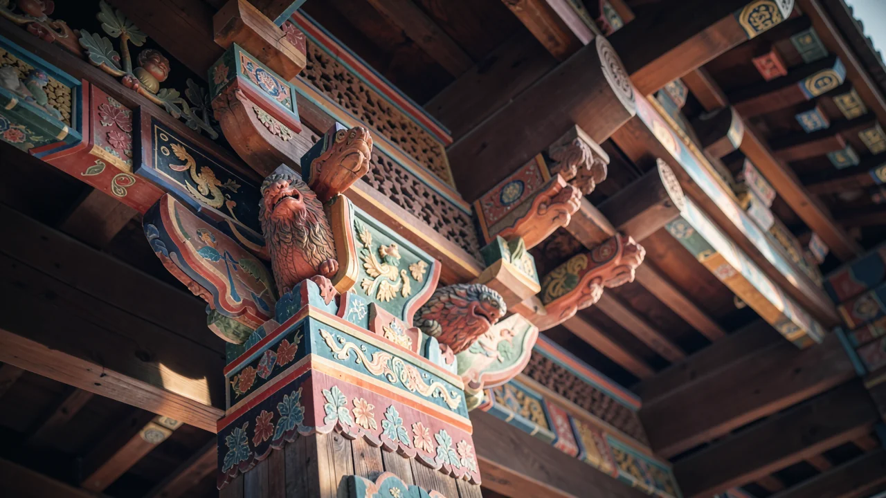

नेपोलियन मंदिर: यूरोप का सबसे विचित्र बौद्ध स्थल।
AI द्वारा निर्मित: इस पृष्ठ का पाठ, चित्र और अन्य मीडिया कृत्रिम बुद्धिमत्ता से बनाए गए हैं और इनमें त्रुटियाँ हो सकती हैं।
रूसी मैदानों के बीचों-बीच, एक मंदिर खड़ा है, जो उस सैन्य इकाई की स्मृति में बनाया गया है जिसने नेपोलियन से युद्ध लड़ा था, और उस धर्म का प्रतीक है जो भौगोलिक रूप से वहां नहीं होना चाहिए।

यूरोपीय मानचित्र में एक विसंगति
कल्पना कीजिए कि आप यूरोप का मानचित्र देख रहे हैं। आप गिरजाघर, पुनर्जागरण महल और अवश्यम्भावी हेवी मेटल उत्सव देखते हैं। अब, वोल्गा डेल्टा के पास रूसी स्टेपी में स्थित अस्त्रखान ओब्लास्ट और काल्मिकिया गणराज्य के ठीक बगल में देखें। यहीं पर आपको खोशेउटोव्स्की खुरुल मिलेगा, जिसे अक्सर यूरोप में सबसे पुराने जीवित बौद्ध मंदिर के रूप में वर्णित किया जाता है। यह मूल रूप से एक भौगोलिक त्रुटि है जिसे ठीक करने से इनकार कर दिया गया, एक सुंदर वास्तुशिल्प विसंगति जो आपको आश्चर्यचकित करती है कि क्या किसी ने गलती से मध्य एशिया के एक टुकड़े को फ़ोटोशॉप में यूरोपीय परत पर खींच लिया।
युद्ध की कहानी के बीच में एक मंदिर क्यों है?
यह समझने के लिए कि यह मंदिर क्यों मौजूद है, आपको केवल धर्म को नहीं देखना होगा; आपको 1812 को देखना होगा। अधिकांश लोग नेपोलियन के रूस पर आक्रमण को ठंड और पीछे हटती सेनाओं की आपदा के रूप में याद करते हैं। लेकिन इस नाटक में खिलाड़ियों का एक विशिष्ट समूह था: काल्मिक रेजिमेंट। ये घुड़सवार सैनिक थे जिन्होंने नेपोलियन से इतनी क्रूरता से लड़ाई लड़ी कि स्मारक केवल धार्मिक कारणों से नहीं बनाया गया था - यह शहीद हुए लोगों की स्मृति में बनाया गया था।
इसलिए यह मंदिर एक युद्ध स्मारक और एक ही समय में पूजा का स्थान है, जिसमें बौद्ध प्रतीक हैं और आध्यात्मिक निरंतरता की गहरी भावना है। यह केवल धार्मिक वास्तुकला के सुंदर होने के बारे में नहीं है; यह एक विशिष्ट सांस्कृतिक पहचान के बारे में है जो मानव इतिहास के कुछ सबसे अराजक सदियों से बच गई।
यह मंदिर काल्मिक रेजिमेंट की स्मृति में बनाया गया है, जिसने नेपोलियन की आक्रमणकारी सेनाओं से लड़ाई लड़ी थी।
'रुको, क्या?' वास्तुकला
यदि आप एक मानक यूरोपीय चर्च में जाते हैं, तो आप रंगीन कांच और शायद एक गार्गॉयल की उम्मीद करेंगे जो ऐसा लगता है जैसे वह आपके पहनावे का आकलन कर रहा है। खोशेउटोव्स्की खुरुल एक अलग अनुभव प्रदान करता है। यह एक वास्तुशिल्प विसंगति है जो आसपास के परिदृश्य को चुनौती देती है। 1814 और 1818 के बीच निर्मित, यह वास्तव में सेंट पीटर्सबर्ग में कज़ान कैथेड्रल के एक छोटे संस्करण जैसा दिखता है: स्तंभ, एक गुंबद और एक नवशास्त्रीय अग्रभाग, जिसके अंदर एक बौद्ध अभयारण्य है। स्टेपी के बीच में यह संयोजन देखना एक अद्भुत अनुभव है।
यहां बताया गया है कि कैसे माहौल बदलता है: 1. आप विशाल, हवादार स्टेपी से शुरुआत करते हैं। 2. आप खुरुल की अचानक, तीक्ष्ण ज्यामिति का सामना करते हैं। 3. आपको एहसास होता है कि यह संरचना वास्तव में पूर्व की खानाबदोश परंपराओं और पश्चिम के स्थापित इतिहास के बीच एक पुल है।
यह मूल रूप से भौतिक रूप में सांस्कृतिक संश्लेषण है। यह सिर्फ एक इमारत नहीं है; यह एक बयान है जो कहता है, 'हम यहां हैं, हम बौद्ध हैं, और हम यूरोपीय कहानी का एक बहुत महत्वपूर्ण हिस्सा हैं, भले ही मानचित्र निर्माताओं ने इसका उल्लेख करना भूल गए।'

क्यों आपको परवाह करनी चाहिए (इंस्टाग्राम तस्वीरों के अलावा)
मुझे पता है कि आप क्या सोच रहे हैं: 'यह एक शानदार इमारत है, लेकिन क्या इसका मेरे जीवन पर कोई प्रभाव पड़ता है?' जब तक आप एक इतिहासकार या एक खानाबदोश घुड़सवार सैनिक नहीं हैं, शायद नहीं। लेकिन यहां एक सबक है कि हम सीमाओं को कैसे परिभाषित करते हैं। हमें चीजों को बक्सों में डालना पसंद है - 'यह यूरोप है,' 'यह एशिया है,' 'यह पूर्वी है,' 'यह पश्चिमी है।' खुरुल इस तरह की कठोर सोच के खिलाफ एक जीवित, सांस लेने वाला खंडन है।
एक ऐसे युग में जहां डिजिटल सीमाएं अधिक तरल होती जा रही हैं और 'पहचान' की अवधारणा पर आपके फोन पर हर एल्गोरिदम द्वारा बहस की जा रही है, दो दुनिया के चौराहे पर मौजूद एक मंदिर को देखना आपके दिमाग को फिर से व्यवस्थित करने का एक शानदार तरीका है। यह हमें याद दिलाता है कि इतिहास शायद ही कभी एक सीधी रेखा होती है और सबसे दिलचस्प चीजें किनारों पर होती हैं।
इसे अक्सर यूरोप में सबसे पुराने जीवित बौद्ध मंदिर के रूप में वर्णित किया जाता है।
इसलिए, अगली बार जब आप सोचते हैं कि आपको यह समझ में आ गया है कि दुनिया कैसे विभाजित है, तो काल्मिक रेजिमेंट और उनके मंदिर को याद रखें। दुनिया बहुत अधिक जटिल, बहुत अधिक बहुस्तरीय और एक साधारण मानचित्र से अधिक सुंदर है।
क्या 'सांस्कृतिक विसंगतियों' का विचार आपको वैश्विक इतिहास से अधिक जुड़ा हुआ महसूस कराता है, या यह केवल दुनिया को अधिक भ्रमित करता है? मैं आपको यह तय करने के लिए छोड़ दूंगा कि आप अपनी स्वयं की अधिक अनुमानित सीमाओं में कैसे नेविगेट करते हैं।